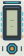
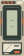
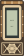
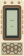
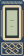
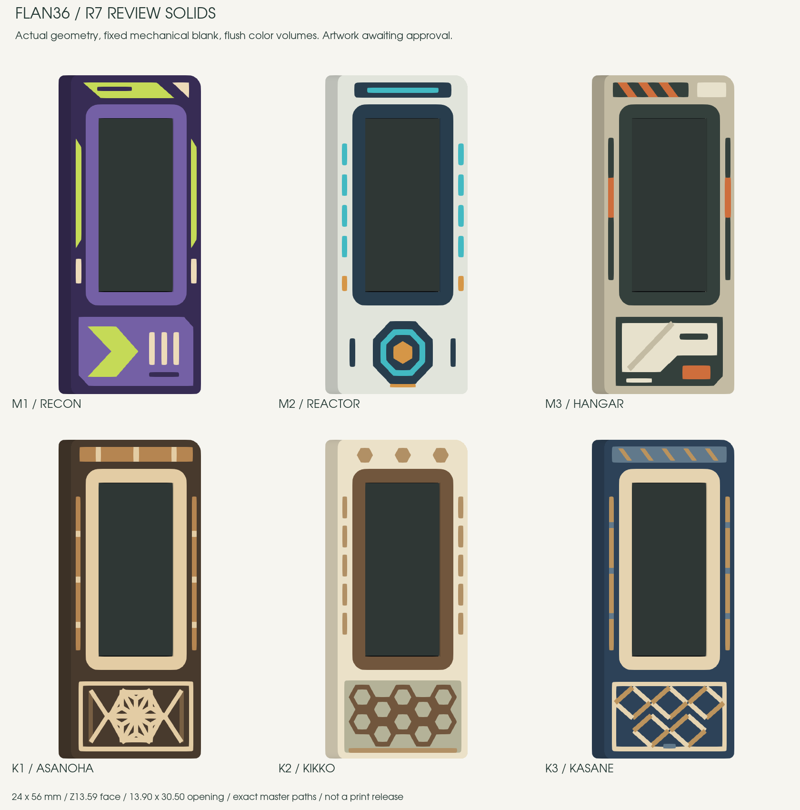

Mecha · choose a proposal
M1 / Recon
Purple scout armor with asymmetric lime panels, a broad directional mark and split cream sensor slots. No face, chin or V-shaped crest.
#382D55#7561A7#C7DD58#F0DEBBThree alternatives for each family. Exact dimensions, solid colors and flat inlays on the current 24 × 56 mm frame. Tap any design to enlarge it.
Its shapes and palette are retained exactly from R6. The six options below are new proposals; artwork integration follows your selection.
Purple scout armor with asymmetric lime panels, a broad directional mark and split cream sensor slots. No face, chin or V-shaped crest.
#382D55#7561A7#C7DD58#F0DEBB
Pale armor around an ink-blue screen. A cyan reactor ring, amber core and segmented side channels replace the previous robot-face motif.
#E4E7DE#293E4E#43BBC4#D89848
Industrial service armor in sand and graphite: offset header, orange latches and a diagonally split access hatch. Flat markings, no bolt heads or raised controls.
#C5BDA5#35413D#D16F3D#EAE4CF
A large sixfold hemp-leaf lattice framed in warm hinoki tones. Complete cells and deliberate broad strips keep the geometry readable at this small scale.
#493B2E#E6CFA6#B78752#796044
Walnut-colored hexagonal lattice on a pale base, with a darker screen surround and quiet segmented side beams. Ten complete cells form a compact repeating panel.
#EEE4CA#72573E#B39266#B6B49A
An original indigo-and-wood diagonal lattice. Offset diamond cells and contrasting intersections create a woven rhythm without changing the flat surface.
#2E4359#E8D6B2#BD955E#627B8DThe six alternatives below are rendered from actual review solids. Their color volumes are checked against the same millimetre paths used in the previews.

The mechanical blank remains unchanged: a 13.90 × 30.50 mm opening, 0.10 mm nominal glass clearance, a Z13.59 mm frame face and a uniform 2.40 mm screen bezel.
Kumiko uses printed color inlays, not open wooden joinery. Its nominal lattice strips are 0.80–0.85 mm wide. The 0.4 mm nozzle / 0.2 mm layer target, fine intersections and physical fit still need a sliced sample.
The preview LCD is illustrative. The native views show the opaque glass model. No motif enters the display opening.
Pattern references: Tanihata and Shion Kumiko. Kasane is an original diagonal composition. The designs use original paths, not traced commercial artwork.
The other R6 alternatives were rejected and are excluded from this selection. Their historical files remain available.
Master SHA256: fdd8da1cf8b1b0c5e88bab93dce8cc6833fc6b9a952874927eb70c9d29cefa40